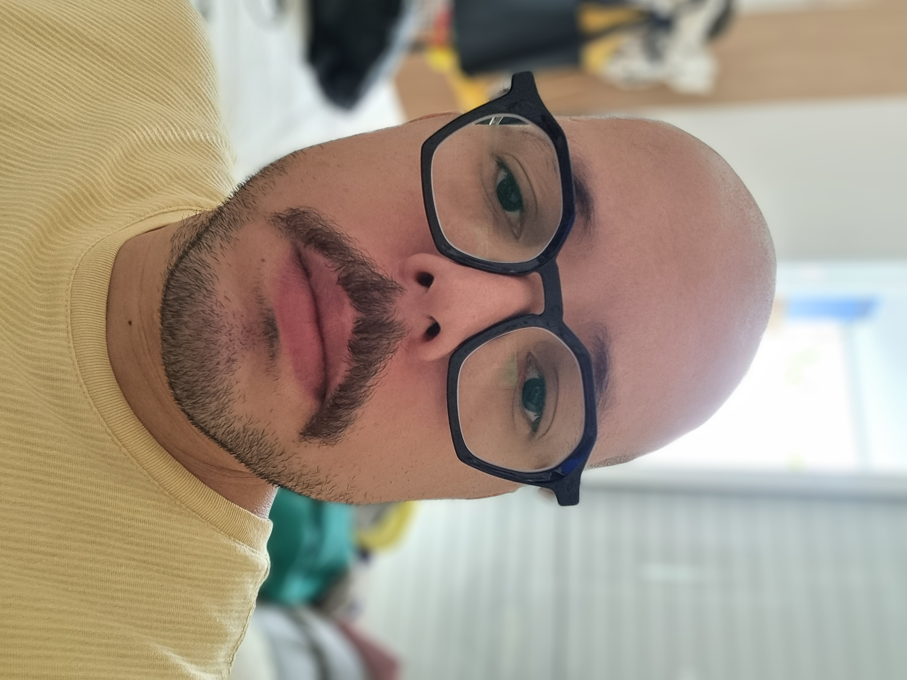

QUEM SOU
Comunicação, tecnologia e inovação.

Luis Felipe Leal
Sobre Mim
Sou produtor audiovisual formado em Rádio, TV e Internet pela Universidade Cruzeiro do Sul e estudante de Tecnologia em Cibersegurança. Minha trajetória profissional une comunicação, tecnologia e inovação, com experiência em produção jornalística, coordenação de equipes, pesquisa de conteúdo, curadoria de imagens e organização de fluxos de trabalho.
Atualmente busco integrar Inteligência Artificial, desenvolvimento web e automação ao universo da comunicação, criando soluções que tornem processos mais eficientes e projetos mais criativos.
Objetivos Profissionais
Busco oportunidades que integrem comunicação, tecnologia e inovação, atuando em projetos que envolvam produção audiovisual, desenvolvimento web, automação com Inteligência Artificial e soluções voltadas à transformação digital.
Formação Acadêmica
🎓 Rádio, TV e Internet
Universidade Cruzeiro do SulConclusão • 2022
Formação voltada à produção audiovisual, televisão, jornalismo, roteiro, comunicação multimídia e mídias digitais.
🛡️ Tecnologia em Cibersegurança
Universidade Cruzeiro do Sul VirtualGraduação em andamento
Estudos em segurança da informação, sistemas Linux, redes, proteção de dados, hardening e análise de vulnerabilidades.